A record of engagements and the thinking behind them. Previous work, written plainly. How we diagnose, what we build, and what actually changes.
Read enough?Let's talk about your situation.
Every engagement starts with a conversation. No pitch. Just a clear look at what's broken and what it would take to fix it.